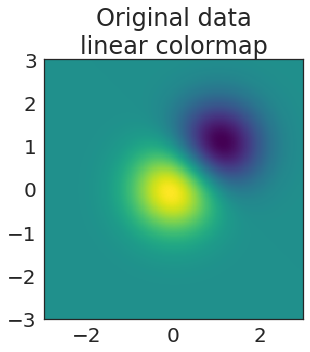

Posted in 2018
Automatically mirror a github repository with CircleCI
- 18 December 2018
tl;dr: you can automatically mirror the contents of one repository to another by using CI/CD services like CircleCI. This post shows you one way to do it using secrets that let you push to a GitHub repository from a CircleCI process.
We recently ran into an issue with the Data 8 course where we needed to mirror one GitHub site to another. In short, the textbook is built with a tool called jupyter-book, and we use github-pages to host the content at inferentialthinking.com. For weird URL-naming reasons, we had to create a second organization to host the actual site. This introduced the complexity that any time the textbook had to be updated, we did so in two different places. The raw textbook content is hosted at https://github.com/data-8/textbook, and the version hosted online is at https://github.com/inferentialthinking/inferentialthinking.github.io.

Open communities need to be partners, not sources of free labor
- 05 December 2018
In the last couple of years, we’ve seen an increasing number of organizations start to spawn products that take a largely open stack (e.g., the SciPy ecosystem) and wrap it in a thin layer of proprietary/custom interface + infrastructure. On the face of it, this isn’t a problem - I really want people to be able to make money using the open source stack - however, there is a big caveat. When you look at the work that those organizations have done over time, you often see a pretty thin trail of contributions back to those open source projects.
I’d argue that using an open community’s software without contributing back is straight-up exploitative (legal, sure, but still exploitative), and we should think about ways to suppress this kind of behavior. This post is a collection of thoughts on that topic.
My weekly workflow
- 26 October 2018
I’ve had a bunch of conversations with friends who were interested in how to keep track of the various projects they’re working on, and to prioritize their time over the course of a week. I thought it might be helpful to post my own approach to planning time throughout the week in case it’s useful for others to riff off of.
First off, a few general principles that I use to guide my thinking on planning out the week.

How do projects signal how “open” they are?
- 26 October 2018
How do open projects signal their “openness” to the outside community? This is a really hard question, particularly because nowadays “open” has become a buzzword that doesn’t just signal a project’s position to the community, but is also used as a marketing term to increase support, users, or resources.
I was thinking about this the other day, so decided to take to twitter:
I like Rust’s governance structure
- 18 October 2018
Recently I’ve been reading up on governance models for several large-ish open source projects. This is partially because I’m involved in a bunch of these projects myself, and partially because it’s fascinating to see distributed groups of people organizing themselves in effective (or not) ways on the internet.
Governance is tricky, because there is an inherent tension between:
Using CircleCI to preview documentation in Pull Requests
- 16 October 2018
Writing documentation is important - it’s the first point of contact between many users and your project, and can be a pivotal moment in whether they decide to adopt your tech or become a contributor.
However, it can be a pain to iterate on documentation, as it is often involves a lot of rapid iteration locally, followed by a push to GitHub where you “just trust” that the author has done a good job of writing content, design, etc.

Summer conference report back
- 01 August 2018
This is a short update on several of the conferences and workshops over the summer of this year. There’s all kinds of exciting things going on in open source and open communities, so this is a quick way for me to collect my thoughts on some things I’ve learned this summer.
Pangeo is a project that provides access to a gigantic geosciences dataset. They use lots of tools in the open-source community, including Dask for efficient numerical computation, the SciPy stack for a bunch of data analytics, and JupyterHub on Kubernetes for managing user instances and deploying on remote infrastructure. Pangeo has a neat demo of their hosted JupyterHub instance that people can use to access this otherwise-inaccessible dataset! See their video from SciPy below.
Adding copy buttons to code blocks in Sphinx
- 05 July 2018
NOTE: This is now a sphinx extension! Thanks to some friendly suggestions, I’ve written this up as a super tiny sphinx extension. Check it out here: https://github.com/choldgraf/sphinx-copybutton
Sphinx is a fantastic way to build documentation for your Python package. On the Jupyter project, we use it for almost all of our repositories.
Introducing _makeitpop_, a tool to perceptually warp your data!
- 04 June 2018
It should go without saying, but you should never do the stuff that you’re about to read about here. Data is meant to speak for itself, and our visualizations should accurately reflect the data above all else.*
When I was in graduate school, I tended to get on my soapbox and tell everybody why they should stop using Jet and adopt a “perceptually-flat” colormap like viridis, magma, or inferno.
Blogging with Jupyter Notebooks and Jekyll using nbconvert templates
- 23 May 2018
Here’s a quick (and hopefully helpful) post for those wishing to blog in
Jekyll using Jupyter notebooks. As some of you may know, nbconvert can
easily convert your .ipynb files to markdown, which Jekyll can easily
turn into blog posts for you.
However, an annoying part of this is that Markdown doesn’t include classes for input and outputs, which means they each get treated the same in the output. Not ideal.
An academic scientist goes to DevOps Days
- 18 May 2018
Last week I took a few days to attend DevOpsDays Silicon Valley. My goal was to learn a bit about how the DevOps culture works, what are the things people are excited about and discuss in this community. I’m also interested in learning a thing or two that could be brought back into the scientific / academic world. Here are a couple of thoughts from the experience.
tl;dr: DevOps is more about culture and team process than it is about technology, maybe science should be too…